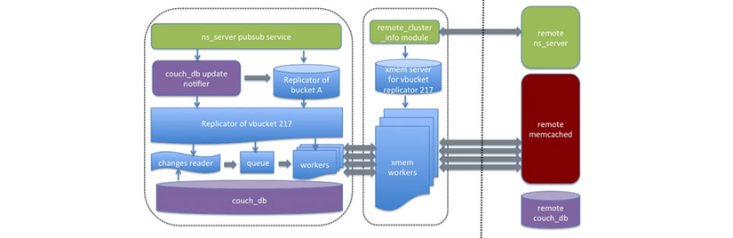

XDCR replication via memcached protocol
XDCR can replicate data through the memcached protocol at a destination cluster.
This mode utilizes highly efficient memcached protocol on the destination cluster for replicating changes. The new mode of XDCR increases XDCR throughput, reducing the CPU usage at destination cluster and also improves XDCR scalability.
In earlier versions of Couchbase Server only the REST protocol could be used for replication. On a source cluster a work process batched multiple mutations and sent the batch to a destination cluster using a REST interface. The REST interface at the destination node unpacked the batch of mutations and sent each mutation via a single memcached command. The destination cluster then stored mutations in RAM. This process is known as CAPI mode XDCR as it relies on the REST API known as CAPI.
This second mode available for XDCR is known as XMEM mode XDCR which bypasses the REST interface and replicates mutations via the memcached protocol at the destination cluster:
In this mode, every replication process at a source cluster delivers mutations directly via the memcached protocol on the remote cluster. This additional mode does not impact current XDCR architecture, rather it is implemented completely within the data communication layer used in XDCR. Any external XDCR interface remains the same. The benefit of using this mode is performance by increasing XDCR throughput, improving XDCR scalability, and reducing CPU usage at destination clusters during replication.
XDCR can be configured to operate via the new XMEM mode, which is the default or with CAPI mode. To change the replication mode, change the setting for xdcr_replication_mode via the Web Console or REST API.